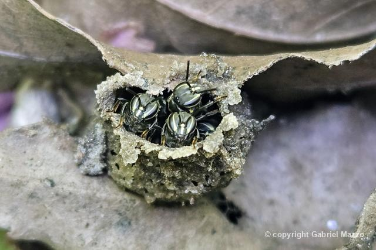
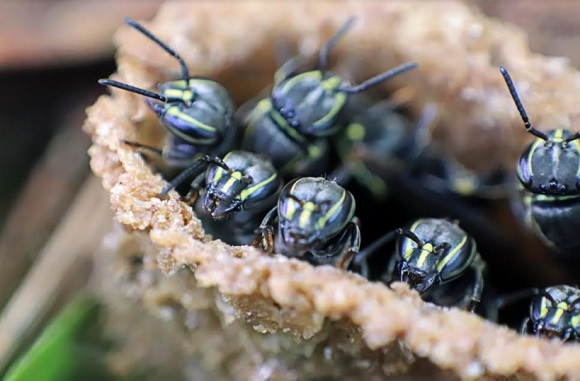

Curiosidades
Nomes populares: A abelha Jataí-da-terra também pode ser referida como Mirim-sem-brilho em certas
regiões.


Mel: O mel de abelha jataí da terra, possuí, um gosto bem suave, com nuances florais, e um aroma
muito agradável. O seu mel costuma possuir uma coloração de âmbar claro. Também possuí propriedades
medicinais por ajudar na imunidade, além de ser rico em antioxidantes e nutrientes. O preço do seu mel
pode chegar até R$100,00 o quilo.
Importância Ecológica: A polinização da abelha Jataí-da-terra ajuda a fertilizar diversas plantas
nativas, ajudando na
reprodução de flores,
e na formação de frutos e sementes. Elas contribuem para a produção agrícola e espécies vegetais
ameaçadas. Entre as plantas que elas polinizam estão:
guavira, acerola, flores silvestres, melancias e abóboras.